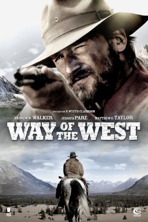

#1382 Way of the West
Alternativ: The Way of the West (Englischer Titel)
 
 IMDB-Wertung: 4.6 / 10
IMDB-Wertung: 4.6 / 10  Metascore: 0
Metascore: 0 
Wade Greyling ist ein Mountie in den einsamen Weiten Kanadas. Als er bei seinen Streifzügen durch die Wälder auf einen Toten stößt, will er der brutalen Tat nachgehen und erreicht schließlich bei seiner der Suche nach Recht und Ordnung eine Siedlung von Einwanderern. Die Männer dort sind zerfressen von Korruption, Gewalt und dem Kampf um das nackte Überleben. Schnell wird klar, dass hier ganz harte Regeln herrschen und jeder, der sich ihnen verweigert, um sein Leben fürchten muss. Aber der Mountie kennt kein Erbarmen, auch nicht als er eine ganze Opiumplantage entdeckt. Kurzerhand fackelt er das ganze Gelände ab und macht sich damit eine Menge Feinde. So kommt es zu einem Showdown, den diese Siedlung vorher noch nie erlebt hat…
Jahr: 2011
Dauer: 83 Minuten
FSK: 16
Land: Kanada Studio: Sunfilm EntertainmentTonspuren: DTS - ,
Untertitel:
Auflösung: 1080p (1920x816) Größe: 2805 MB
Genre: Drama, Western
Regisseur: Wyeth Clarkson
Drehbuch: Wyeth Clarkson, Grant Sauve, Charles Johnston, Wayne Grigsby, John McAndrew
Soundtrack: Ivan Barbotin, Norman Orenstein
Darsteller:
 Andrew W. Walker als Wade Grayling
Andrew W. Walker als Wade Grayling Jessica Paré als Amethyst
Jessica Paré als Amethyst George Buza als Kleus
George Buza als Kleus Matthew G. Taylor als Nikolai
Matthew G. Taylor als Nikolai- Andrey Ivchenko als Pachek
 Allen Keng als Dog Pit Gamblers
Allen Keng als Dog Pit Gamblers- Emerson Wong als Dog Pit Gamblers
- Earl Pastko als Olaf
- John Wildman als Robert Johnson
 Tony Munch als Cobb
Tony Munch als Cobb- Kestrel Martin als Cleora
- Maria Williams als Mirdsa
- Lawrence Dublenko als Oatchko
- Veronica Watt als Anifsa
- Joe Zucchiatti als Mikhail
- Dean Williams als Damoslav
- Zvonko Jovanovic als Uri
- Mike Wadsworth als Rafal
- Buck Smarch als NWMP Rider 1
- Richard Beauchamp als NWMP Rider 2
- Ada H. Chan als Chinese Woman
 David Bradley als Dog Pit Gamblers
David Bradley als Dog Pit Gamblers- Jeremy Chow als Opiul Den Smokers
- David Eng als Opiul Den Smokers
- Dominic Fung als Opiul Den Smokers
- Tristan Hopper als Blin
- Jung-Yul Kim als Dog Pit Gamblers
- Samuel Kung als Opiul Den Smokers
- Tony Lal als Opiul Den Smokers
- Tal Kang Lee als Opiul Den Smokers
- Kimberly Lung als Opium Den Smoker
- Steven Park als Dog Pit Gamblers
- Justin Young als Opiul Den Smokers
- Tingju Zhu als
- Rachel Tam als Chinese Daughter , uncredited
Datei: X:\HD-Western-2000-2015\Way of the West (2011, FSK16, 1920x816).mkv seit 30.06.2015
Festplatte: HD Eastern+Western
 Es gibt insgesamt 61 Filme in der Gruppe 'HD-Western-2000-2015'
Es gibt insgesamt 61 Filme in der Gruppe 'HD-Western-2000-2015'